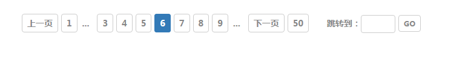

show workers

列表表单
利用表单来整齐简洁的显示对比的信息

移动端
rem布局/css3的圆角/阴影

注册
通过一系列的选项的填写，验证用户的基本信息，正则的校验

时钟
获取时间对象，利用定时器设置当前的时间
-
聊天室
利用ajax的交互获取服务器传送的信息，实时的进行数据的更新，同步聊天
-
选项/轮播
利用先清空所有，再设置当前的思想，实现图片及内容的切换

排行
浮动的布局及ul列表的使用，整齐地显示排行的情况

3D效果
利用css的transition及transfrom实现运动、立体的效果
-
滚动条
利用鼠标的滚轮事件，来自制滚动条的效果
-
canvas版时钟
canvas画图结合定时器完成

登录页
一般是网址的登录都需要用户的登录，账号和密码的验证，提交到后台校验

日历
选项卡的思想，加上dom创建，实现简易的日历

合计计算
AngularJS的数据交互

产品简介
通过表单的标题来显示产品的各项信息
-
地图
使用百度的API

个人中心
mobile-Jquery框架
- 
移动端
Zepto框架的使用

留言板
ajax实现和PHP后台语言数据接口的对接

列表
简单的ul列表结合浮动的布局/雪碧图的使用

许愿墙
ajax的数据交互

移动端
rem布局/弹性布局

登录
实现没有页面跳转的布局、后台信息的验证

Virtue
Far far away, behind the word mountains there live the blind texts.
WORKERS SHOW